Research
Flow noise reduction using structured surfaces (2018-present)
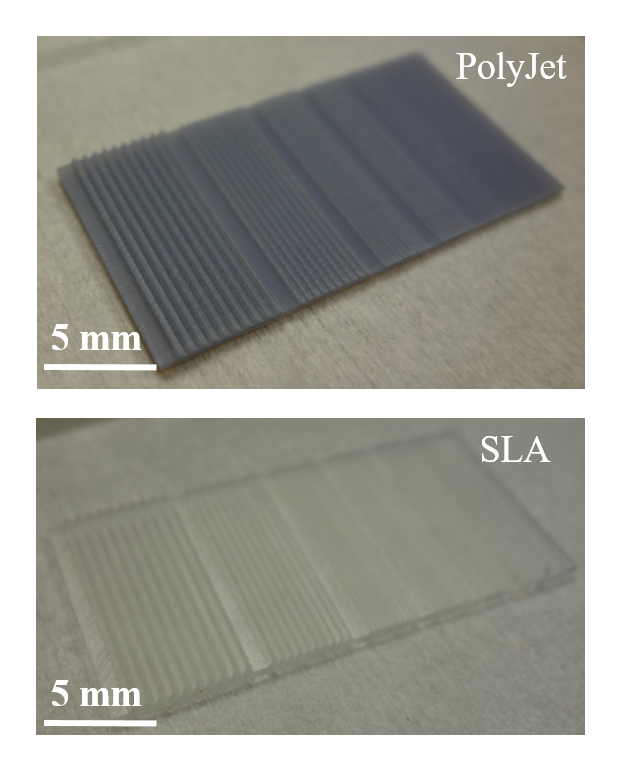 Turbulent flows over bio-inspired surface features such as shark denticles or riblets have been studied extensively in attempts to reduce drag. Another consequence, noted in aeroacoustics, is a decrease in associated flow noise. Recent advances in 3D printing using polyjet and stereolithography (SLA), facilitate accurate fabrication of such complex surface geometries down to 100-200 µm over large areas (>100 sq.cm). This ongoing work aims to characterize flow noise generated over 3D printed structured surfaces. Flow velocity, wall pressure and radiated noise are simultaneously measured under a turbulent boundary layer. This work is funded by the Office of Naval Research and performed in collaboration with Dr. Charles Rohde, Dr. James Wissman and Alec Ikei from NRL.
Development and testing of fully compliant flow sensors (2018-present)
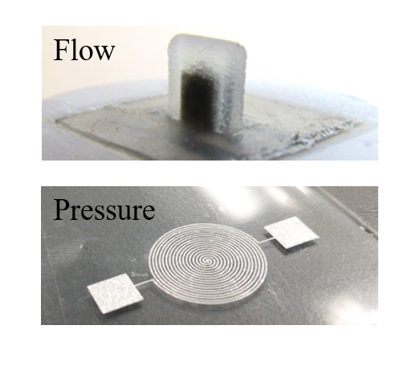 Inpired by the soft and sensitive flow detecting abilities of fish, this ongoing work involves the design, fabrication and performance characterization of fully compliant (soft) sensors for measuring velocity and pressure in turbulent flows. This work is funded by the Office of Naval Research and performed in collaboration with Dr. James Wissman (PI) and Dr. Charles Rohde from NRL.
Aerosolization of oil-dispersant layers due to bubble bursting (2016-17)
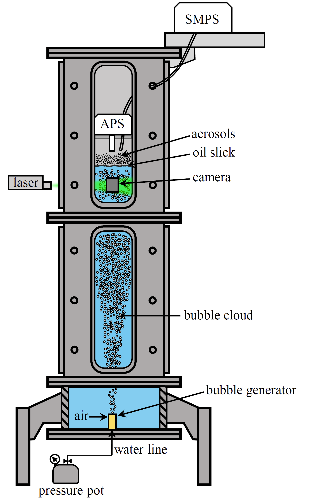 Bubble bursting in oceanic whitecaps is a well-known mechanism of marine aerosol generation. When crude oil spills occur, these aerosols may be oil-laden, leading to public health concerns. The introduction of dispersants aimed at accelerating the breakup of slicks, which greatly reduce the oil-water interfacial tension, potentially alters the aerosol number and size distributions. To characterize these effects, controlled bubble plumes are injected into a vertical seawater column (Dia: 0.6 m, Ht: 1.8 m) with an oil-contaminated surface. The aerosol concentrations are measured in the micron (0.5-20 µm) and nano (10-370 nm) size ranges. Tests are performed at the same air injection rate for varying bubble diameters (614, 263 and 89 µm), slick thicknesses (50 and 500 µm), and oil-water interfacial tensions. The latter are achieved by using crude oil, crude oil premixed with the dispersant Corexit 9500A at a ratio of 1:25, and pure dispersant. The results confirm that bubble bursting causes aerosolization of oil in the micron range, which increases with the introduction of dispersant. An order of magnitude increase in the concentration of nano-aerosols occurs for the largest bubbles, but not the smaller ones, and only for slicks containing pure dispersant or 500 µm thick crude oil-dispersant mixtures. This work was funded by the Gulf of Mexico Research Initiative (GoMRI) and performed in collaboration with Dr. Nima Afshar-Mohajer and Prof. Kirsten Koehler from the Johns Hopkins Bloomberg School of Public Health.
Flow in left ventricular thrombus patients using optimized echo PIV-PTV (2015-16)
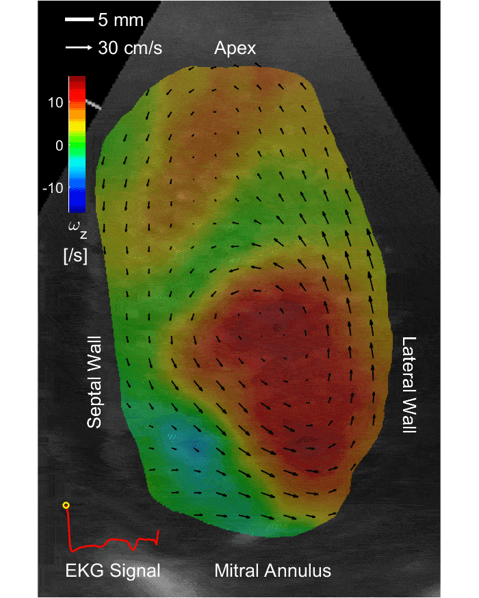 Patients with severe cardiomyopathy are at a risk of developing a left ventricular thrombus (LVT). However, the blood flow conditions that contribute to its formation are not entirely established, making it difficult to assess the risk of LVT in patients with CM and administer accurate dosage of anticoagulants. To address this problem, in-vivo routine contrast echo images obtained from LVT patients were analyzed using optimized procedures that integrate image enhancement, particle image velocimetry (PIV) and particle tracking velocimetry (PTV) for mapping the blood flow. Phase averaged velocity and vorticity distributions (sample shown in figure) follow the flow evolution during the cardiac cycle and are used for calculating statistical parameters of the LV vortex, including penetration depth, strength and induced apical velocity. Even though the penetration depth of the LV vortex is key in resolving the blood clot with anticoagulation (as observed in literature), the decay and fragmentation of the LV vortex as it migrates away from the mitral annulus are crucial in determining the risk of LVT relapse. This work was performed in collaboration with Dr. Thura T Harfi and Dr. Richard George at the Division of Cardiology, Johns Hopkins Medicine.
Functional space and time resolved detection of platelets and von willebrand factor (2015-16)
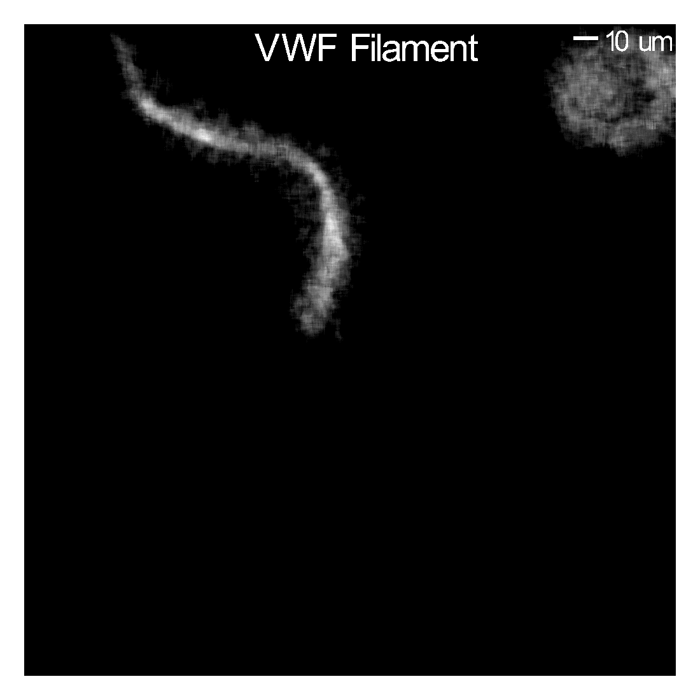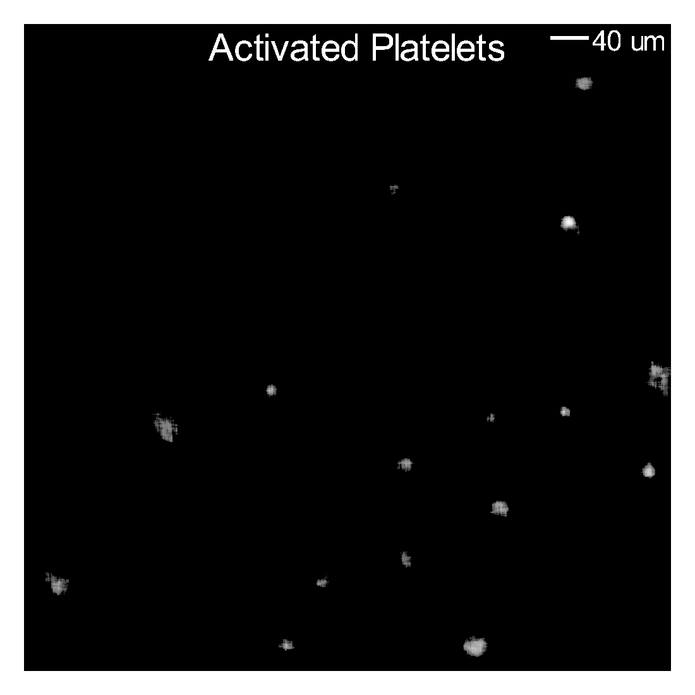 High shear stresses in Left Ventricular Assist Devices (LVADs) induce supra-physiological levels of von Willebrand factor (vWF) cleavage and platelet (PLT) activation, leading to excessive bleeding and thrombosis. In order to study these effects, imaging and post-processing techniques for time-resolved detection of vWF cleavage and PLT activation in deep suspensions of the same spatial and temporal scales as those of LVADs have been introduced. Recombinant vWF-eGFP and human vWF labeled with a polyclonal antibody:FITC (IgG:FITC) are used to visualize vWF cleavage and its interaction with PLTs. The calcium sensitive probe Indo-1 is employed for detecting PLT’s intracellular calcium release. Images are recorded with a high-sensitivity EM-CCD camera, allowing detection in 1 ms exposure times. Post-processing algorithms enhance, identify and track the signals. This work was performed in collaboration with Dr. Jacopo Biasetti and several others as part of the Hopkins Heart Initiative.
Effects of dispersants on a crude oil jet in cross-flow (2015)
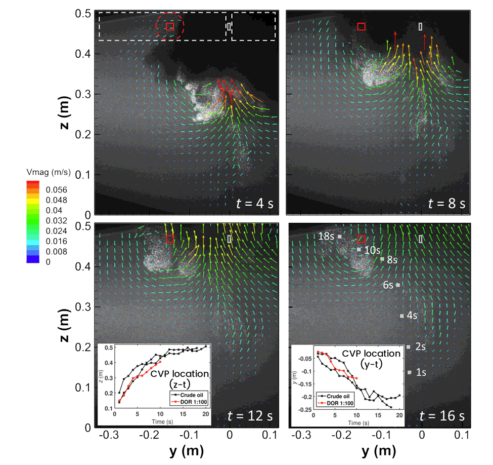
The fate of the subsurface oil after a blowout which occurs in oil spills is largely unclear, especially with the use of chemical dispersants that alter the interfacial
tension. Accurate prediction of the location and size distribution of oil droplets can be of vital importance for response teams reacting to an oil spill.
The laboratory experiments consisted of flow visualizations, in situ measurements of the time evolution of droplet-size distributions using holography, and
particle image velocimetry (PIV) to characterize dominant flow features. Increasing the dispersant concentration dramatically decreased the droplet sizes and increased
their number, and accordingly, reduced the rise rates of droplets and the upper boundary of the plume. The flow within the plume consisted primarily of a pair of
counterrotating quasi-streamwise vortices (CVP) that characterize jets in crossflows. The evolution of plume boundaries was dominated by interactions of droplets with
the CVP. The size of droplets trapped by the CVP was predicted correctly using a trapping function, based on a balance of forces on a droplet located within a horizontal eddy.
This work was performed in collaboration with Dr. David Murphy and Xinzhi Xue, funded by the Gulf of Mexico
Research Initiative (GoMRI).
Interaction of oil droplets with density stratification and plankton (2014)
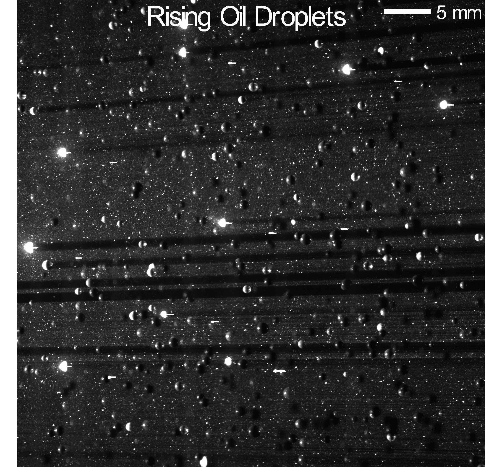
Stable density stratified layers are found in the ocean and sustain sensitive marine environments such as plankton within them. In the event of an oil spill, oil droplets rise from the
ocean floor and interact with these stratified layers and plankton (that degrade oil). The effect of this interaction on the interfacial mixing, oil droplet sizes and degradation
is not very well known.
A stable stratified seawater interface was setup in the plume facility at University of Texas - Marine Science Institute. High resolution 2D particle image velocimetry
(PIV) measurements were performed at the density interface. Sample instantaneous snapshot of the flow containing rising oil droplets and traces particles is seen in the figure.
This work was performed in collaboration with Prof. Jian Sheng, funded by the Gulf of Mexico
Research Initiative (GoMRI).
Refractive-index matched PIV measurements in an automotive fan (2011-14)
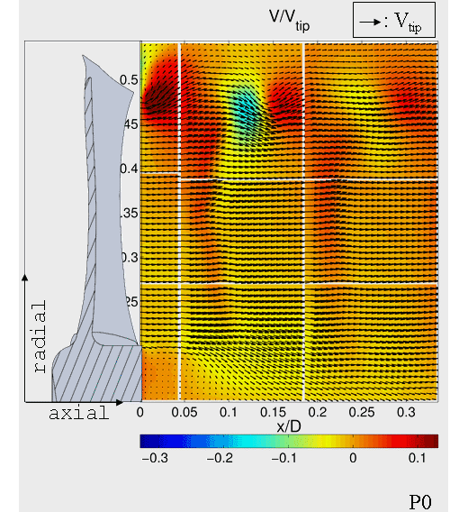
In order to study the complex interactions between turbulent radiator flow and shrouded axial automotive cooling fans, a dedicated 360 gal. refractive
index matched flow facility was setup. High resolution phase locked 2D PIV measurements were performed focussing at the inlet, near wake and the tip
gap of the axial fan. Blade vibration and pressure rise measurements were also performed.
To maintain high resolution, nine sample areas were patched together to cover the entire blade wake, three sample areas covering the blade inlet and a
high magnification region near the tip gap. Data obtained in a meridional plane include mean and rms velocity distributions. In the phase averaged
radial velocity distributions shown in the figure, the entrainment of the blade wake by the tip vortex, as well as the diffusion and attenuation of the
vortex strength, entrainment speed and wake velocity deficit with axial distance. Turbulence levels are elevated in the vicinity of the tip vortex,
within the blade wake, as well as behind the rotor blade hub, especially at the intersection of the blade wake with shear layer behind the hub.
This work was funded in part by Robert Bosch LLC and was performed in collaboration with
Cascade Technologies Inc. for high fidelity benchmarking of Large Eddy Simulations (LES).
Publications
Journal articles
J. P. Wissman, K. Sampath, S. E. Freeman and C. A. Rohde, 2019. Capacitive Bio-Inspired Flow Sensing Cupula. Sensors, 19(11), 2639.
https://doi.org/10.3390/s19112639
K. Sampath, N. Afshar-Mohajer, C. L. Dora, W. Heo, J. Gilbert, D. Austin, K. Koehler and J. Katz, 2019. Aerosolization of crude oil-dispersant slicks due to bubble bursting.
Journal of Geophysical Research: Atmospheres, 124, 5555-5578.
https://doi.org/10.1029/2018JD029338
K. Sampath, T. T. Harfi, R. T. George and J. Katz. Optimized Time-Resolved Echo Particle Image Velocimetry–Particle Tracking Velocimetry Measurements Elucidate Blood Flow in
Patients With Left Ventricular Thrombus. Journal of biomechanical engineering, 140(4), p.041010, 2018. https://doi.org/10.1115/1.4038886
J. Biasetti, K. Sampath, A. Cortez, A. Azhir, A. A. Gilad, T. Kickler, T. Obser, Z. M. Ruggeri, and J. Katz. Space and Time Resolved Detection of Platelet Activation
and von Willebrand Factor Conformational Changes in Deep Suspensions. International Journal of Biomedical Imaging, 2017. https://doi.org/10.1155/2017/8318906
D. Murphy, X. Xue, K. Sampath, and J. Katz. Crude oil jets in crossflow: Effects of dispersant concentration on plume behavior. J. Geophys. Res. Ocean. 114, 2016.
https://doi.org/10.1002/2015JC011574
Conference proceedings
J. Wissman, K. Sampath, A. Ikei, K.B. Özütemiz, C. Majidi, C. A. Rohde, 2019. Soft-matter pressure sensors for turbulence detection. Sensors and
Smart Structures Technologies for Civil, Mechanical, and Aerospace Systems 2019 Mar 27 (Vol. 10970, p. 109702D). International Society for Optics and Photonics.
https://doi.org/10.1117/12.2514358
J. Wissman, K. Sampath, C. A. Rohde, 2019. Liquid metal-based bio-inspired capacitive flow sensor. Bioinspiration, Biomimetics, and Bioreplication IX 2019 Mar 13 (Vol. 10965, p. 109650T).
International Society for Optics and Photonics. https://doi.org/10.1117/12.2514355
K. Sampath, S. K. Uppaluri, Y. S. Shin, M. Sortor and J. Katz, 2015. Phase Locked PIV Measurements in Wake of an Automotive Fan Model. Proc. Fan 2015 Conf.
Conference presentations
K. Sampath, C. A. Rohde, J. Wissman and A. Ikei. Flow noise reduction using bio-inspired structured surfaces. Am. Phys. Soc., 2018.
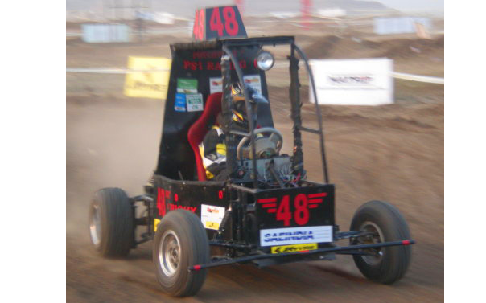
A childhood fascination for cars made me take up Mechanical Engineering. I was the captain of PSI Racing, the BAJA-SAEINDIA team at NIT Trichy that designed, fabricated and raced
All Terrain Vehicles at the 2010 and 2011 events. Check out an article here.
I closely follow Formula One Racing and am keen to learn the latest advancements in the automobile industry.
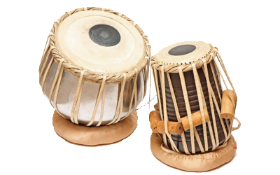
I am undergoing training in playing the "Tabla" under the tutelage of Guru Pt. Rajgopal Kallurkar, Kallur Mahalakshmi
Tabla Vidyalaya, Bangalore, India. I have given performances at JHU and have been passionately pursuing percussion since 2010.
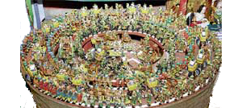
"Dhaatu", a non-profit organization aims to instil traditional values and wisdoms in today's society through puppetry, doll-keeping and story-telling.
I am a member of the Dhaatu team since 2010 and assist in the design and mechanization of doll-displays. Check out an article here.
kaushik.sampath.ctr.in@nrl.navy.mil | +1-443-310-2016
K. Sampath, N. Afshar-Mohajer, C. L. Dora, W. Heo, J. Gilbert, D. Austin, K. Koehler and J. Katz. Aerosolization of crude oil-dispersant slicks due to popping of bubbles. Am. Phys. Soc., 2018.
J. Wissman, K. Sampath and C. A. Rohde. All-Soft Artificial Lateral Line Sensor Fabricated with Lost-Wax Processes and Liquid Metal. Society of Engineering Science (SES) (Madrid, Spain), 2018.
N. Afshar-Mohajer, K. Sampath, C. Li, A. M. Rule, J. Katz and K. Koehler. Health Risk Assessment of Exposure to Volatile Organic Compounds and Particulate
Matter Emitted from Oily Seawater Treated with Dispersant. Gulf of Mexico Oil Spill & Ecosystem Science Conference 2018.
K. Sampath, N. Afshar-Mohajer, W. Heo, J. Gilbert, D. Austin, K. Koehler and J. Katz. Bubble Bursting Aerosolizes Slicks of Crude Oil-Dispersant Mixtures.
Gulf of Mexico Oil Spill & Ecosystem Science Conference 2018.
N. Afshar-Mohajer, K. Sampath, A. M. Rule, J. Katz, K. Koehler.
Aerosol Emission from Seawater Contaminated by Crude Oil and Crude Oil-Dispersant Slicks due to Bubble Bursting. 36th Annual American Association for Aerosol Research Conference. Raleigh, NC. 2017
K. Sampath, N. Afshar-Mohajer, W. Heo, J. Gilbert, D. Austin, K. Koehler, and J. Katz. Aerosolization of crude oil and dispersant slicks due to bubble bursting. Am. Phys. Soc., 2017.
K. Sampath, T. T. Harfi, R. T. George and J. Katz. Optimized PIV-PTV techniques for processing time-resolved in-vivo contrast ultrasound images. The 12th International Symposium on Particle Image Velocimetry 2017.
N. A. Mohajer, K. Sampath, A. M Rule, J. Katz, and K. Koehler. Aerosol Emissions from Crude Oil and Crude Oil-Dispersant Contaminated Seawaters due to Bubble Bursting. Gulf of Mexico Oil Spill & Ecosystem Science Conference 2017.
K. Sampath, T. T. Harfi, R. T. George and J. Katz. Flow in patients with left ventricular thrombus using optimized echo PIV-PTV. Bull. Am. Phys. Soc. Volume 61, 2016.
J. Biasetti, K. Sampath, A. Cortez, A. Azhir, A. A. Gilad, T. Kickler, T. Obser and J. Katz. Time-resolved detection of platelet activation and von Willebrand factor cleavage in deep
suspensions, ASAIO 62nd Annual Conference, San Francisco, June 15-18, 2016.
D. Murphy, X. Xue, K. Sampath, and J. Katz. Crude oil plumes in crossflow: Effect of turbulent flow structure on oil residence in plume. ICMF 2016 International Conference on
Multiphase Flow, 2016.
K. Sampath, T. T. Abd, R. T. George, and J. Katz. Particle tracking velocimetry using echocardiographic data resolves flow in the left ventricle. Bull. Am. Phys. Soc. Volume 60,
2015.
Other Interests
Automobiles
Percussion
Puppetry
Contact